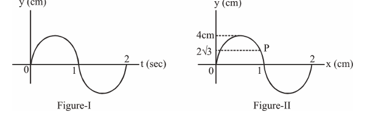
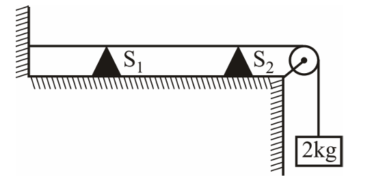
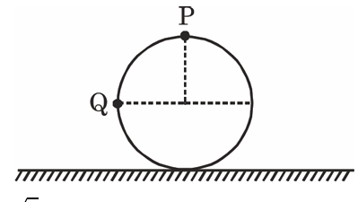
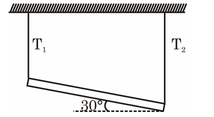
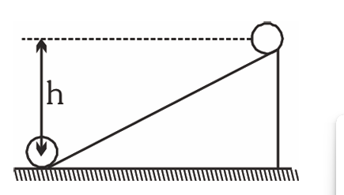
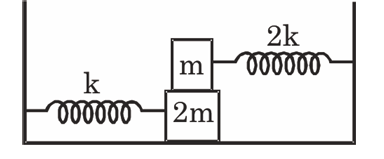
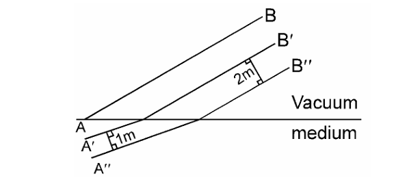
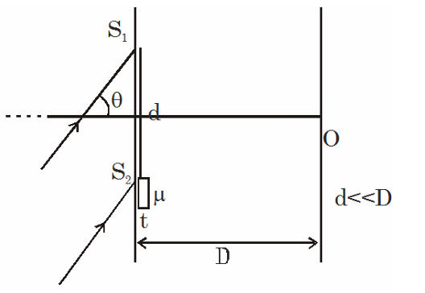
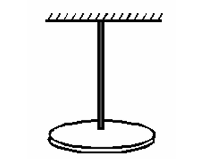

Section-I: Physics
1. Two balls having mass 2 kg and 3 kg are
approaching each other with velocities 3m/s and 2
m/s respectively on the horizontal frictionless
surface. They undergo a head on elastic collision.
Find out the maximum potential energy of
deformation
(A) zero
(B) 12.5 J
(C) 15 J
(D) none of these
2. Choose the incorrect statement for the system:
(A) The net momentum of the system, in the
centre of mass frame will be zero
(B) The kinetic energy of the system in center of
mass frame will be minimum...
(C) In the presence of non-zero impulsive external
force for the system, we cannot conserve the
momentum of the system...
(D) In the presence of non-zero external force for
the system, it might not be possible to
conserve the mechanical energy...
3. A transverse sinusoidal wave moves along a string
in the positive x direction. In figure (I)
displacement of particle at P as a function of time
is given and in figure (II) at a particular time t, the
snap shot of wave is shown. The wave velocity
(cm/s) and velocity of particle at P (cm/s) will be :

(A) 1 i , −3π j^ ^
(B) 1 i , 3π j^ ^
(C) 1 i , 2π j^ ^
(D) −1 i , −2π j^ ^
4. A sonometer wire vibrates with tuning fork of frequency 400 Hz.When the support S of
sonometer wire is moved by a distance of 25cm, it
again resonates with the given tuning fork. If mass
of 2 kg was suspended by the wire find mass per
unit length of wire : (There is no resonance in
between)..

(A) 0.5 gm/m
(B) 1 gm/m
(C) 1.5 gm/m
(D) 2 gm/m
5. Four tuning forks of frequencies 200, 201, 204 and 206 Hz are sounded together. The beat frequency
will be
(A) 6
(B) 12
(C) 15
(D) None of these
6. A train moving at a speed of 220 ms^-1 towards a
stationary man, emits a sound of frequency 1000
Hz. The frequency of the sound detected by the
man (speed of sound in air is 330 ms ).
(A) 5000 Hz
(B) 3000 Hz
(C) 3500 Hz
(D) 4000 Hz
7. A closed organ pipe and an open organ pipe have
their first overtones identical in frequency. Their
length are in the ratio ...
(A) 1 : 2
(B) 2 : 3
(C) 3 : 4
(D) 4 : 5
8. A ball is rolling on the ground. The ratio of speed
at P and speed at Q is

(A) 2 : √2
(B) 2 : 1
(C) 2√2 : 1
(D) 1 : 2
9. A uniform rod of mass m and length is connected with two ideal strings from ends of rod as shown in
figure, if tensions in strings are T & T
respectively then

(A) T > 1/2 mg
(B) T > 1/2 mg
(C) T < 1/2 mg
(D) T = T = 1/2 mg
10. A ring of mass M and radius R is at rest at the top of an incline as shown. The ring rolls down the
plane without slipping. When the ring reaches
bottom, its angular momentum about its center of
mass is

(A) MR√gh
(B) MR√2gh
(C) MR√gh/2
(D) None of these
11. A particle executes a simple harmonic motion of time period T. The time taken by the particle from its mean position to half the amplitude will be :-
(A) T/4
(B) T/8
(C) T/12
(D) 3T/4
12. In the shown arrangement, the coefficient of friction between the blocks is µ and no friction between ground surface and block 2m. The blocks are displaced slightly and released. They move together without slipping on each other. The time period will be :-

(A) 2π√(m/k)
(B) 2π√(3m/2k)
(C) 2π√(2m/3k)
(D) 2π√(9m/2k)
13. The intensity of light from a source is 500/π W/m². Find the amplitude of electric field in this wave.
(A) √3 × 10² N/C
(B) 2√3 × 10² N/C
(C) √3/2 × 10² N/C
(D) 2√3 × 10¹ N/C
14. A plane electromagnetic wave travelling along the X-direction has a wavelength of 3mm. The variation in the electric field occurs in the Y-direction with an amplitude 66Vm⁻¹. The equation for the electric and magnetic fields as a function of x and t are respectively.
(A) E = 33 cos π × 10¹¹(t − x/c) ; B = 1.1 × 10⁻⁷ cos π × 10¹¹(t − x/c)
(B) E = 11 cos 2π × 10¹¹(t − x/c) ; B = 1.1 × 10⁻⁷ cos 2π × 10¹¹(t − x/c)
(C) E = 33 cos π × 10¹¹(t − x/c) ; B = 1.1 × 10⁻⁷ cos π × 10¹¹(t − x/c)
(D) E = 66 cos 2π × 10¹¹(t − x/c) ; B = 2.2 × 10⁻⁷ cos 2π × 10¹¹(t − x/c)
15. Certain plane wavefronts are shown in figure. The refractive index of medium is

(A) 2
(B) 4
(C) 1.5
(D) Cannot be determined
16. A monochromatic beam of light falls on Young's double slit experiment apparatus as shown in figure. A thin sheet of glass is inserted in front of lower slit S. (λ = 600 nm is wavelength of light in vacuum). If zero order bright fringe (corresponding to zero phase difference) is obtained on screen at O, then

(A) (μ − 1) t = d sin θ
(B) (μ − 1) t = d cos θ
(C) μt = dθ
(D) (μ − 1) t = (d sin θ)/λ =t
17. The β rays which are emitted from a radioactive material are :-
(A) electro - magnetic radiations
(B) orbital electrons
(C) electrons or positrons emitted by a nucleons
(D) neutral particle emitted by nucleons
18. Two particles of mass m and 2m moving in opposite direction collide head on. They have same de-Broglie wavelength before collision. After the collision :-
(A) If e = 1, de-Broglie wavelength of m is greater than that of 2m.
(B) If e = 1, de-Broglie wavelength of 2m is greater than that of m.
(C) The de-Broglie wavelength of m increases if e = 1.
(D) The de-Broglie wavelength of 2m remains same if e = 1.
19 The binding energies of the nuclei of He, Li, C & N are 28, 52, 90, 98 Mev respectively. Which of these is most stable?
(A) He
(B) Li
(C) C
(D) N
20. For photoelectric emission from certain metal the cut-off frequency is n. If radiation of frequency 2n impinges on the metal plate, the maximum possible velocity of the emitted electron will be (m is the electron mass) :
(A) √(2hn/m)
(B) √(hn/(2m))
(C) √(hn/m)
(D) √(2hn/m)
Section-II: Physics
21. The minimum energy of an incident electron necessary for ionization of atom of hydrogen is equal to W0. Find minimum initial energy W (= αW 0) of singly ionized incident helium atom, necessary for ionization of stationary hydrogen atom. Write the value of α in OMR sheet.
22. The work functions of Silver and sodium are 4.6 and 2.3 eV, respectively. The ratio of the slope of the stopping potential versus frequency plot for Silver to that of Sodium is.
23. One slit of a Young's experiment is covered by a glass plate (μ = 1.4) and the other by another glass plate (μ2 = 1.7) of the same thickness. The point of central maxima on the screen, before the plates were introduced, is now occupied by the third bright fringe. Find the thickness of the plates (in µm), the wavelength of light used is 4000 Å.
24. A sound level meter placed in front of the loudspeaker of a 60W audio system reads 70dB. All else being equal, when placed in front of a 120W system, the meter will read ('x' in dB). Write x + 7/10 as your answer. (x is in nearest integer and log 2 = 0.30).
25. A circular disc suspended from a torsional wire oscillates with a time period T when twisted by a small angle θ from equilibrium and released. If another disc of the same material but twice the radius and one-fourth thickness is made to oscillate (alone) with the same wire, its time period is found to be nT. Write the value of n.
